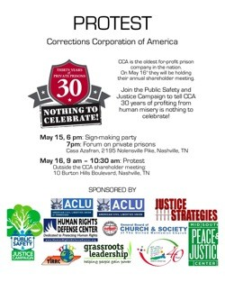
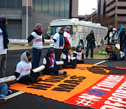

The past year was an incredible year for justice-centered activism. As we begin 2014, here's a "top 10" list of creative and awe-inspiring peace and justice campaigns that have inspired us at the Fellowship of Reconciliation this past year.
 What were your favorite moments? Let us know on Facebook! What were your favorite moments? Let us know on Facebook!
Moral Mondays in North Carolina
This initiative is bringing together tens of thousands to protest and resist sweeping right-wing legislation. With Rev. William Barber, the dynamic NAACP state president (just named as IndyWeek's Person of the Year), serving in the role of the movement's prophetic leader, more than 900 people have already been arrested at the state capital, and thousands are preparing to march again on February 8.
As we learned this month during the 21st Century Freedom Ride, a new generation of activists are being trained to carry forth this grassroots organizing, and as reported yesterday, the movement plans to spread to other states in 2014. (AP Photo/The News & Observer, Ethan Hyman.)
Ending the "cradle to prison pipeline"
The Children's Defense Fund's work to end the "cradle to prison pipeline" has been an invigorating leader in the movement to end mass incarceration. Young, Pacifist, and Pround alums Shakya Cherry-Donaldson and Eric Brown (and their Nashville, TN team) actively engage in community building to bring neighbors together, educate the public, and challenge the very destructive creation that is the pipeline.
In May, the "Rethinking Prisons 2013" conference at Vanderbilt University helped mobilize a mass protest against the 30th anniversary of the Correctional Corporations of America, the world's third-largest private prison company. FOR's Shauen Pearce says, "Their work is awesome and always at the forefront of my mind as people doing amazing life changing work unapologetically, gracefully, and truthfully."
The anti-GMO movement
The movement against genetically-modified organisms in food gained traction and became increasingly global. Washington State's Initiative 522 nearly enacted the first legislation that would force labeling genetically engineered foods. It was foiled by Monsanto and other GMO-producing multinationals, which spent millions to oppose this progressive bill as they did with California's Proposition 37 a year earlier, but nevertheless pushed a larger public debate on two issues: first, what's actually in our food and agriculture; and second, do we control our own food sources?
One of our favorite moments in the campaign was the release of this hilarious Village People parody video, shared with us by anti-GMO activist and FOR member Jennifer Newell.
Nationwide nonviolent action by immigrant rights activists
Immigrants and immigration activists demanded action on the relentless and unprecedented enforcement of detention and deportation of undocumented persons. While mainstream politicians and immigration organizations continued to pursue a legislative agenda for "comprehensive immigration reform," immigrant youth, family members of detained immigrants, and other frustrated organizers began a campaign of nonviolent civil disobedience at the U.S./Mexico border, and physically prevented deportations in Atlanta, Phoenix, Los Angeles, Washington DC, Philadelphia, New Orleans, Chicago, Fresno and more.
Groups like DreamActivist exposed the hypocrisy of the Obama administration's rhetoric, are pushing for an immediate end to deportations, and are inspiring new initiatives like Freedom University in Atlanta, working to overcome the systematic exclusion of undocumented youth from colleges and universities.
Fighting military and surveillance drones
Speaking of the White House and its hypocrisy, the anti-drones movement has grown rapidly and a sea change is happening with ever-larger numbers of Americans opposing both militarized and surveillance drones. CODEPINK is playing a lead role in the U.S., cosponsoring a national conference in Washington this November that FOR's Leila Zand attended (and described its first-hand stories as "devastating").
They're also organizing extraordinary protests, such as when cofounder Medea Benjamin vociferously interrupted a President Obama press conference this May, forcing the president to respond to her demands for accountability on drones and the failure to close Guantanamo prison.
When more than 100 Gitmo prisoners went on a weeks-long hunger strike, they were force-fed to keep them alive. Yasiin Bey (known better as the hip-hop artist Mos Def), shocked the world in July by dramatically demonstrating the force-feeding procedure. (Warning: This video may be distressing to some viewers.) In October, following more than three months on hunger strike in solidarity with Gitmo prisoners as well as striking prisoners at Pelican Bay Prison in California, former FOR staffer Andrés Thomas Conteris was force-fed in front of the White House.
Supporting nonviolent resolutions to Syria and Iran
U.S. foreign policy bent to the will of massive grassroots pressure to support negotiated resolutions to the civil war in Syria and the long-running political stand-off with Iran, both despite widespread bipartisan demands in Congress for military action.
Remembering the news that came from Geneva on November 24, when reports indicated that Iran would receive relief from sanctions after agreeing to increased oversight of its nuclear program, FOR's Leila Zand says, "That day I couldn't control my tears! I felt all the past work we have done, over almost a decade, finally had a positive result."
Confronting racial profiling
Racial profiling suffered setbacks across the nation. Most notably, New York City's notorious "stop and frisk" practice was deemed unconstitutional by federal Judge Shira Scheindlin, following months of mobilizing by grassroots activists, and incoming Mayor Bill de Blasio announced his intention to improve police-community relations.
In neighboring Connecticut, an October court ruling in Hartford strengthened enforcement of an anti-racial profiling law that some activists had called "toothless." In the Midwest, the Nebraska state legislature passed an anti-racial profiling law. And in Arizona, infamous Sheriff Joe Arpaio was restricted by a court order from using racial profiling tactics to detain and jail Latinos.
Expanding LGBTQ rights
Unprecedented victories! The only thing missing from this "46 Most Iconic LGBT Moments of 2013" list of highlights is the news late last month that Utah federal judge Robert Shelby struck down the state's ban against same-sex marriage.
Sadly, also last month in the world of religion, Rev. Frank Schaefer was defrocked by the United Methodist Church in punishment for his role in officiating his son's wedding to another man.
Facing police violence
The War Resisters League -- which turned 90 this year, happy birthday! -- launched the Facing Tear Gas campaign, bringing attention to the escalating production, sale, and use of these repressive tools by police and military units worldwide.
In Oakland, CA, last October, dozens of community groups mobilized to form the Facing Urban Shield Action Network to protest the city's hosting of a massive conference expo of militarized police units. Rabbi Lynn Gottlieb, a FOR Freeman Fellow who helped organize the action, working especially with faith communities, reported, "Urban Shield militarizes our police with combat style weapons and a military mentality that views community members as potential adversaries and threats to public security."
Combating the climate crisis
Last but not least, the global movement to combat the climate crisis has grown by leaps and bounds. An unlikely alliance of environmental activists, Midwestern ranchers, and First Nations/Indigenous Peoples, coordinated by 350.org, have effectively stymied the unholy Big Oil/political partnership seeking to open the KeystoneXL Pipeline for more than two years. As Rachel Maddow described in this August program, the grassroots coalition of opponents have found success in attaching a serious political cost to the approval of the pipeline.
To keep up the pressure, next month the Interfaith Moral Action on Climate will hold collective interfaith actions on the climate crisis, led by an action at the White House, in honor of Rev. Dr. Martin Luther King, Jr.
What a year it's been. We can hardly wait to see what happens in 2014!
What were your favorite moments? Share them on our Facebook page! |